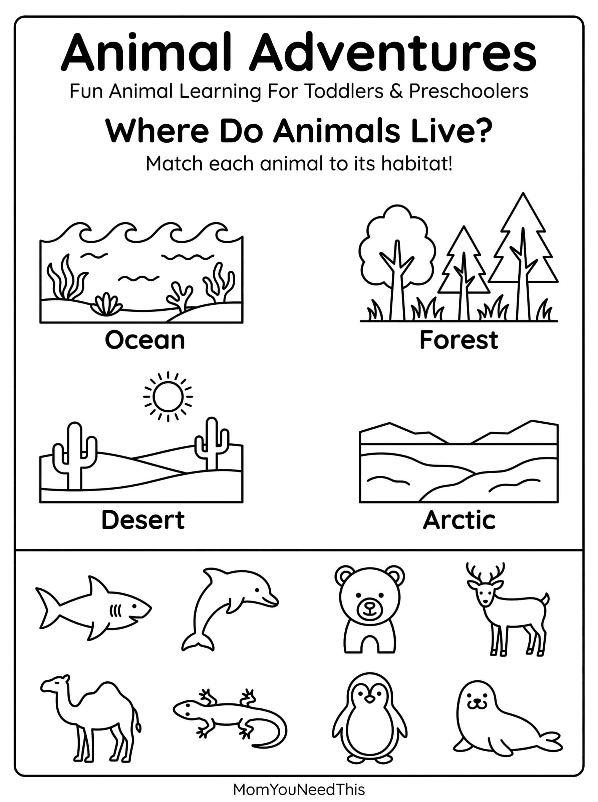

Animal Habitats Free Printable Animal Habitats Chart For Kids
Help toddlers and preschoolers discover where animals live with this fun, kid-friendly animal habitats printable. Explore different habitats and learn about the animals that call each one home.
🐾 Explore Where Animals Live
Use the printable to help your child learn about different habitats, recognize animals, and connect each animal with the environment where it lives.
Free Animal Habitats Printable


How To Use This Printable
Point to each habitat and talk about the animals that live there. Ask your child questions like "Where does a polar bear live?" or "Which animals might you find in the ocean?" You can also use the printable for matching games, preschool lessons, or quiet learning time.
Why Learn About Animal Habitats?
Learning about habitats helps children understand animals, nature, and the world around them. It also builds vocabulary, observation skills, and early science knowledge in a fun and age-appropriate way.
🎁 Keep Exploring Free Learning Activities
Discover more printable activities, toddler resources, and learning ideas created for busy parents.
🎁 View All Free Resources